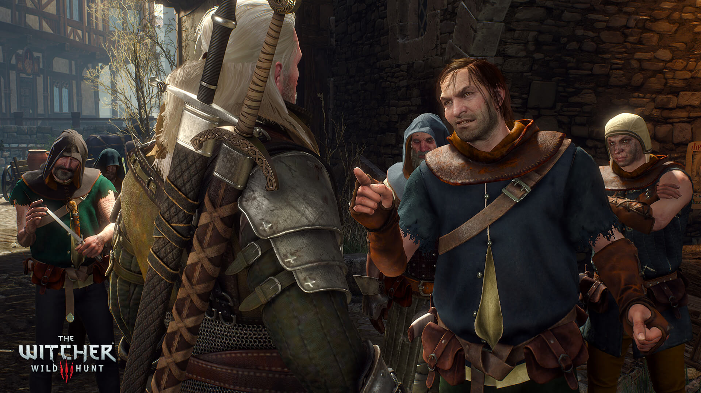

The Witcher: Wild Hunt is a story-driven, next-generation open world role-playing game set in a visually stunning fantasy universe full of meaningful choices and impactful consequences. In The Witcher you play as the professional monster hunter, Geralt of Rivia, tasked with finding a child of prophecy in a vast open world rich with merchant cities, viking pirate islands, dangerous mountain passes, and forgotten caverns to explore.
Minimum:
Requires a 64-bit processor and operating system
OS: 64-bit Windows 7, 64-bit Windows 8 (8.1) or 64-bit Windows 10
Processor: 64-bit Windows 7, 64-bit Windows 8 (8.1) or 64-bit Windows 10
Memory: 6 GB RAM
Graphics: Nvidia GPU GeForce GTX 660 / AMD GPU Radeon HD 7870
Storage: 35 GB available space
Reccomended:
Requires a 64-bit processor and operating system
OS: 64-bit Windows 7, 64-bit Windows 8 (8.1) or 64-bit Windows 10
Processor: Intel CPU Core i7 3770 3.4 GHz / AMD CPU AMD FX-8350 4 GHz
Memory: 8 GB RAM
Graphics: Nvidia GPU GeForce GTX 770 / AMD GPU Radeon R9 290
Storage: 35 GB available space